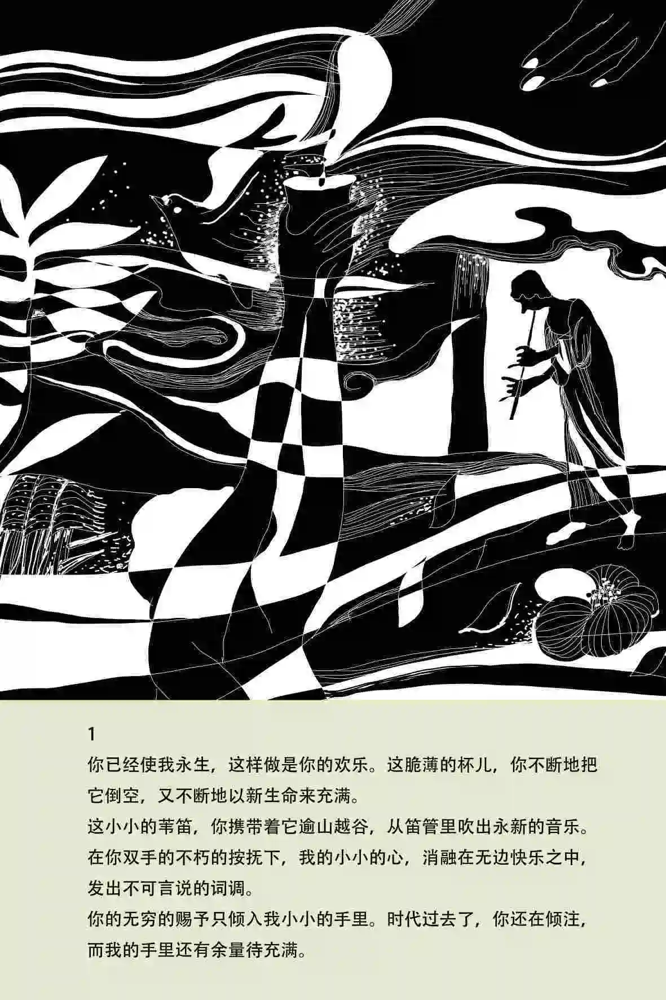

《吉檀迦利》是印度作家泰戈尔创作的诗集。这部宗教抒情诗集，是一份“奉献给神的祭品”。（不少人以为“吉檀迦利”是奉献之意，其实是献诗之意）泰戈尔向神敬献的歌是“生命之歌”，他以轻快、欢畅的笔调歌唱生命的枯荣、现实生活的欢乐和悲哀，表达了作者对祖国前途的关怀。泰戈尔凭借该作获得1913年诺贝尔文学奖。


|  | 《吉檀迦利》是印度作家泰戈尔创作的诗集。这部宗教抒情诗集，是一份“奉献给神的祭品”。（不少人以为“吉檀迦利”是奉献之意，其实是献诗之意）泰戈尔向神敬献的歌是“生命之歌”，他以轻快、欢畅的笔调歌唱生命的枯荣、现实生活的欢乐和悲哀，表达了作者对祖国前途的关怀。泰戈尔凭借该作获得1913年诺贝尔文学奖。
|
|
|||||||||||||||||
|
该诗集出版于1912年，其中的主要作品选自诗人发表于孟加拉文版的《吉檀迦利》、《奉献集》、《渡口集》和《歌之花环》等诗集。在译为英文的过程中，诗人有时将原作中的二三首诗糅合在一起。该诗集可以代表他这时期宗教抒情诗的主要倾向。 | ||||||||||||||||||
|
作为泛神论代表作的《吉檀迦利》，描写了诗人对神的赞颂，对神到来的渴望，与神失之交臂的失望，以及与神合一的狂欢，寄予了诗人对无限世界的向往和沉思。从诗行间，令人感受到诗人生命激情，若无形的力量，引导着读者走向诗人构筑的激情与爱的世界里。 | ||||||||||||||||||
|
印度本是一个崇尚宗教的国度，千百年来人们孜致以求努力在宗教的神秘世界之中寻找人生启迪和慰藉。泰戈尔将现代西方人文主义、科学思想与印度传统宗教相融合，潜心汲取印度各种教义中的积极因意，用西方现代文明与印度古典哲学精神相结合，创造了独特的“诗人的宗教”，这种生命哲学的深刻内涵，充分体现在《吉檀迦利》中 |